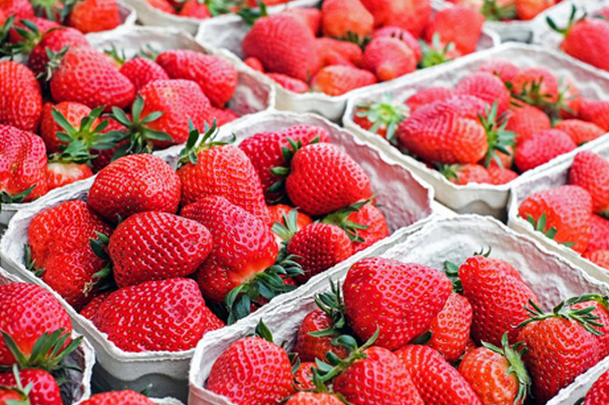

FRESAS DE IRAPUATO

OTRO ELEMENTO QUE DA FAMA A ESTE LUGAR, SIN DUDAS, SON LAS FRESAS, PUES A LO LEJOS, SI VAS POR CARRETERA, VERÁS LOS CAMPOS CUBIERTOS DE ESTOS DELICIOSOS FRUTOS ROJOS QUE PUEDES DISFRUTAR EN UNA GRAN VARIEDAD DE PRESENTACIONES.
PUEDES DELEITARTE PROBANDO FRESAS CON CREMA, FRESAS CRISTALIZADAS O SIMPLEMENTE AL NATURAL.